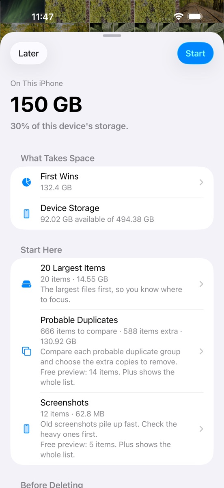

Large videos first
The biggest opportunities appear before small photo cleanup.
iPhone photo storage
See what takes space in your Photos library before adding storage. Tasnif shows occupied space, starts with large videos, and keeps every review under your control.
Free on the App Store for iPhone and iPad.

Tasnif focuses on the signal that is hard to see in Photos and iPhone Settings: media size, selected space, and the places where a careful review can start.
The biggest opportunities appear before small photo cleanup.
Concrete review collections that are easy to understand.
Nothing is deleted without the standard Apple confirmation.
Short pages for common iPhone photo storage questions.